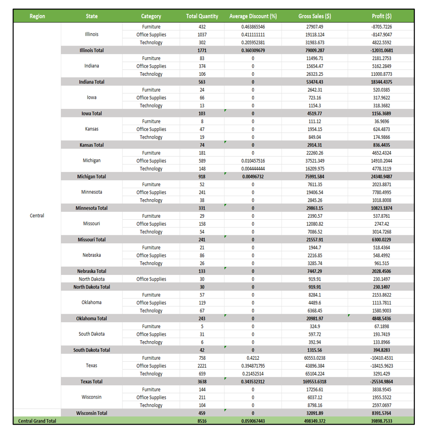

A glimpse of the Operational report
Insights with stratergic analysis and data intelligence.

DataForge is a project where I dive deep into managing and analyzing data using SQL, Python, and ERD modeling. It all starts with carefully looking at each piece of data to understand its importance. Then, I clean up the data, making sure it's accurate and reliable by fixing missing values and getting rid of any duplicates.
After cleaning, I made some changes to the data structure to make it easier to work with. For example, I converted some columns into a more useful format for analyzing dates, and I added new metrics like total sales per customer and profit margin.
Next, I tackled outliers in the data – those unusual values that can skew our analysis. I used a method called IQR to handle them, focusing on each category separately to make sure our approach fits the specific data.
But it's not just about cleaning and organizing data – I also create policies and procedures to ensure everything is done consistently and accurately. This includes documenting the data transformation process and checking for errors to maintain data quality.
Throughout the project, I use SQL scripts and Workbench to create a database schema and perform ETL (Extract, Transform, Load) processes. This helps us move data from one place to another, clean it up, and make it ready for analysis. I also generated operational and executive reports using SQL scripts and Workbench, providing valuable insights for decision-makers. These reports turn raw data into actionable information that can guide important business decisions. DataForge is about taking messy data, cleaning it up, and turning it into something meaningful and useful for making informed decisions. It's a comprehensive project that showcases my skills in data management and analysis using a variety of tools and techniques.

A glimpse of the Executive Report.
For more info on this project including Sql Scripts, reports, diagrams and ETL scripts please visit my DataWorks repository on GitHub.